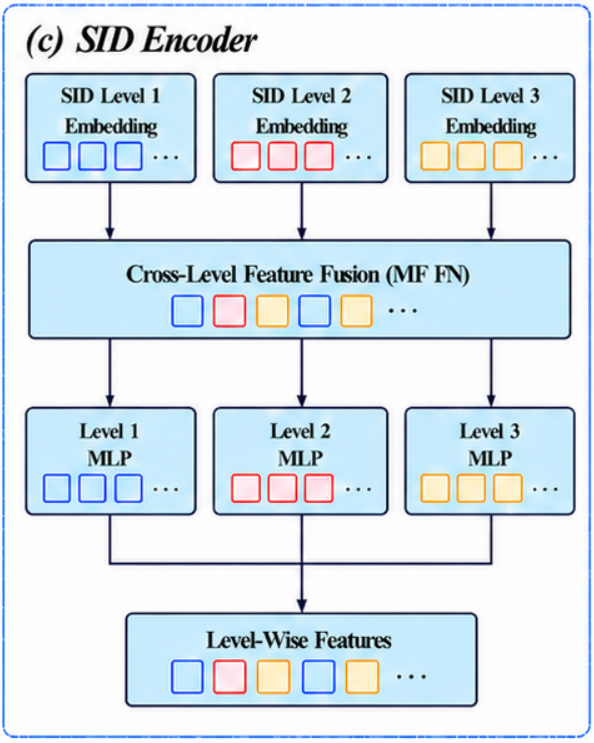
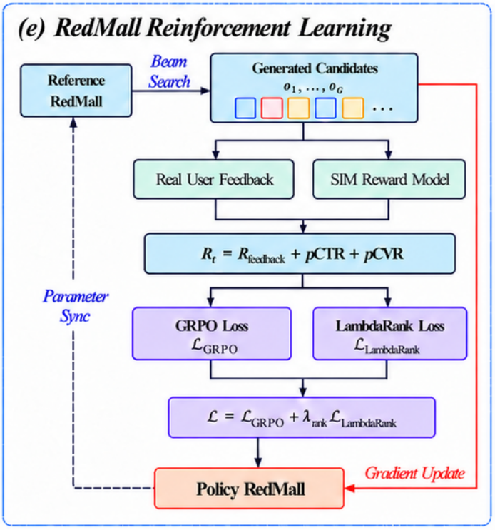
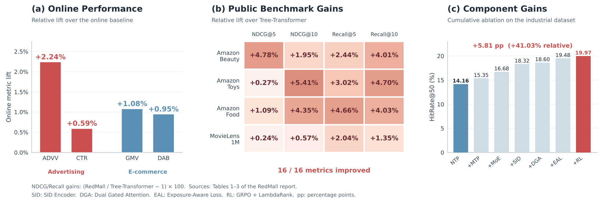

目录 · 11 节
1它到底在解决什么问题？2先看整体：一条请求从历史到商品3为什么要让同一商品的三个码互相知道彼此？4解码器：容量加大，注意力加门5一段历史配五个答案，再把没点的那一类往下压6后训练：奖励之外，还要求顺序排对7上线：同一个 SID 下挂着很多商品8实验：数字说明了什么9我认为它的局限10一个推荐/搜索团队可以怎么试11结论生成式召回生成的是 SID，不是商品。多件商品可能共享同一个 SID，从一个 SID 取回哪几件，要另外决定。RedMall 的作者大多来自小红书，线上 A/B 做在工业电商推荐和广告的召回阶段，其中一组单独测了这一步。模型不变，只把“每个 SID 下按历史成交表现取前 40 件”换成“依次取出每个 SID 下的全部商品，直到召回名额用完”，广告场景的广告主价值（ADVV）相对线上基线的涨幅就从 2.24% 降到 1.1%，而且不再显著。模型没动，这项涨幅就从显著变成了不显著，变的只是从 SID 落到商品这一步。模型本身沿用 TIGER 式的“读历史 SID、逐码生成下一个商品的 SID”，在输入、解码器、训练目标和后训练四处补强；在作者的工业数据上，这些改动累加起来让 HitRate@50 从 0.1416 升到 0.1997。公开数据集上，它对最强基线的领先很薄，有两格只差第四位小数。
它到底在解决什么问题？
RedMall 给每件商品一个三层 SID，比如论文举的例子 <s_a_8000><s_b_1000><s_c_76>。它来自商品的文本和图像 embedding：两者先用用户按时间排好的交互序列做一轮“预测下一件商品”的后训练，带上“谁和谁常被前后点击”的行为信息，再融合成一个向量。这一轮多模态表示后训练用什么序列模型、两种 embedding 怎样参与预测并被更新，原文未说明。RQ-VAE 把这个向量逐层量化：每层有一本码本，也就是一组可学习的代表向量（码字），三层依次有 8,192、1,024、128 个；每层取离当前向量最近的码字，把它的编号记进 SID，再把剩下的差值交给下一层。所以第一层是粗类，第二、三层逐步细分。用户历史就是一串这样的三码组，模型的任务是生成用户接下来可能点或买的商品的三码组，再从 SID 映射回商品。
拿一个用户演一遍（示意）：
| 时间 | 发生了什么 | 对训练意味着什么 |
|---|---|---|
| 过去一个月 | 点过 20 件美妆商品 | 这是输入历史 |
| 接下来 | 又点了口红、粉底、卸妆水等 5 件 | 普通训练只拿第一件当答案 |
| 同一时间段 | 刷到几件香水，一件没点 | 普通训练完全不用这条信息 |
论文认为现有做法在这里漏掉了四样东西。第一，三层码被当成一串普通 token，可第二层码是在第一层基础上细分出来的，这层依赖没有被显式建模。第二，NTP 训练每段历史只监督一个下一件商品，而召回本来就要一次出很多件。第三，曝光了却没点的商品只出现在曝光日志里，NTP 用不上。第四，强化学习只给每个候选单独打分，不直接要求整张候选列表的先后顺序排对。
先看整体：一条请求从历史到商品

整条链路可以按产出物排成一张表：
| 阶段 | 输入 | 产出 |
|---|---|---|
| 商品编码 | 文本和图像 embedding | 每件商品一个三层 SID |
| 编码器 | 用户历史的 SID token，加上 SID 编码器给的附加量 | 用户行为表示 |
| 解码器 | 用户行为表示，加已生成的码 | 逐码生成目标 SID，线上 beam 宽度 50 |
| 监督训练 | 同一历史配 5 个目标，外加曝光未点的一级码 | 模型参数 |
| 后训练 | 一组候选及其奖励 | 用 GRPO 和 LambdaRank 微调后的模型 |
| 上线 | 生成的 SID | 每个 SID 下按历史成交表现最多取 40 件商品 |
编码器和解码器各 4 块。改动分散在每一层，大部分来自已有工作，自创的主要是 SID 编码器，所以读这篇更该看每处改动各值多少。下面按数据流拆开讲。
为什么要让同一商品的三个码互相知道彼此？
在 TIGER 这类模型里，历史中的每个码各查各的 embedding。码 8000 不管后面跟的是 1000 还是 1003，查出来的向量都一样。编码器的 self-attention 是全可见的，三个码之间原本也能互相 attend，但哪三个 token 属于同一件商品，编码器得从数据里自己学出来。

SID 编码器做的事情很直接。对历史里的每件商品，先用编码器同一张 embedding 表查出三层码的向量 。然后用一个小前馈网络把三个向量的信息混合成一个融合表示 ，每一层的码都能把信息传给另外两层。最后三个 MLP 各自把 映射回第 1、2、3 层的特征，分别加到这三个码 token 原本的输入上。位置编码保持不动，这一点和 Tree-Transformer（另一种为 SID 层级专门设计位置编码的生成式推荐模型）不同。
一个例子（示意）：两件商品的 SID 分别是 (8000, 1000, 76) 和 (8000, 1003, 12)。没有 SID 编码器时，两处的码 8000 进编码器的向量完全一样。加上之后，第一处的 8000 多了一个由 (8000, 1000, 76) 算出的附加量，第二处多了一个由 (8000, 1003, 12) 算出的附加量。于是同一个粗类码在进入 attention 之前，就已经带上了它所属商品的细分信息。
这个模块在工业消融里的单步增量最大：HitRate@50 从 0.1668 升到 0.1832，绝对多了 1.64 个百分点。它只改编码器的输入，作者称它即插即用。
解码器：容量加大，注意力加门
解码器以 TIGER 的解码器为底。作者觉得它太小，做了两处改动。
一处是把解码器里的前馈层换成稀疏 MoE：12 个专家，推理时只激活其中 2 个。整个模型约 0.5B 参数，激活约 0.1B，所以参数量加大了，每次推理实际参与计算的部分仍然小。消融里这一步多 1.33 个百分点，提示在作者的数据上，解码器容量是瓶颈之一。
另一处叫 Dual Gated Attention。按论文图 2(d)，解码器块里的 self-attention 和 cross-attention 都换成了带门控的版本，做法沿用 Qwen3 的 gated attention，用一道门调节 attention 输出保留多少。论文把另一项改动也算在这个模块里：对已观测的历史商品去掉因果 mask，改用双向 attention，让每件历史商品同时看到更早和更晚的交互。编码器一侧的历史本来就是全可见的，论文没说历史双向化具体改的是解码器哪一路输入、哪个 attention 的可见范围。门控和双向两项合在一起，消融里只多 0.28 个百分点，是所有模块里最小的一步。
一段历史配五个答案，再把没点的那一类往下压
先看 MTP。训练时把每条序列最后 5 件商品留作目标，前面的部分作为 5 个目标共用的历史。解码器对 5 个目标各跑一遍，每一遍仍然逐码预测这个目标的三层 SID，最后 5 个损失相加：
其中 是共享历史， 是第 个目标商品的第 个码，。直觉是：用户刚看完 20 件美妆，接下来点的口红和卸妆水都是合理答案，只拿第一件当标准答案会浪费监督。代价也清楚，解码器的训练前向次数变成原来的 5 倍。这一步让 HitRate@50 从 0.1416 升到 0.1535。
再看曝光感知损失。对每个目标交互，在一个大小为 5 的曝光窗口里找出曝光了但没点的商品，取这些商品最常见的第一层码作为负目标。窗口按条数还是按时间截取，原文只写了 window of size 5。正样本照常要求模型生成完整的三层码；负样本只压第一层：
是选出的负一级码， 是用户历史。负样本损失乘上系数 （控制负反馈的强度）后与正样本损失相加，再除以 batch 里正负样本总数。手算一下（示意）：如果模型给香水那个一级码的概率是 0.30，这一项损失是 ；概率压到 0.05 时只剩 。压的是第一层码，等于把一整个粗类的生成概率往下推，而不只是一件商品。消融里这一步从 0.1860 升到 0.1948，相对上一行涨 4.73%。
后训练：奖励之外，还要求顺序排对

监督训练之后，作者再做一轮强化学习。每个候选 SID 的奖励由两部分相加。
一部分来自真实日志：看这个用户在之后的窗口里点过哪些商品（原文写 future window，大小 5，按条数还是按时间未注明），拿候选的三层码逐层和每个点过的 SID 比，取匹配层数最多的那个，得 0 到 3 分；窗口里没有点击就是 0。各层独立比，第二层不同而第三层相同时，第三层照样算 1 分。
另一部分来自奖励模型。线上精排模型特征太多，不方便直接拿来训练生成模型，作者改用 SIM 做奖励模型：用户历史以 SID 序列输入，模型对每个候选输出 pCTR 和 pCVR，监督信号来自线上精排模型。精排是给商品打分，生成的候选却是 SID，一个 SID 又可能对应多件商品。论文没说 SIM 如何接收候选 SID，也没说商品级的精排监督怎样转换成 SID 级的 pCTR、pCVR 标签。两部分按 合成，。
手算一个小组（示意）。用户之后点过 (8000, 1000, 76)。候选 A 是 (8000, 1000, 12)，前两层对上，反馈分 2，再加 pCTR 0.04、pCVR 0.01，总分 2.05。候选 C 是 (512, 7, 3)，一层都不中，只剩 pCTR 0.02 和 pCVR 0.01，总分 0.03。在这个示意里，反馈分每差一层就差 1 分，比 pCTR、pCVR 的差别大得多；窗口里没有点击时，所有候选的反馈分都是 0，高低只由 pCTR 和 pCVR 决定。
GRPO 按组内相对优势更新策略，组大小 32。它给的是每个候选各自的好坏信号，不直接要求模型给出的概率顺序和奖励顺序一致。LambdaRank 补的就是这一点。候选的模型得分取 ，对每一对奖励更高的 和更低的 ：
是交换这两个候选后 NDCG 的变化，对 NDCG 影响越大的错序，权重越大。接着上面的例子（示意）：若模型给 A 的对数概率是 −3.2、给 C 的是 −2.5，顺序反了，这一对未乘 权重的 logistic 项是 ；顺序对了、差值是 +0.7 时，这一项降到约 0.40，再乘上这对的 NDCG 权重就是它的损失。总损失是 。这一步在消融里从 0.1948 升到 0.1997，多 0.49 个百分点。消融把 GRPO 和 LambdaRank 作为一行一起加入，两者各占多少分不开。 Hoot 说

顺序反了（示意）
- 奖励
- A 2.05，C 0.03：A 更好
- 模型对数概率
- A −3.2，C −2.5：模型更愿意生成 C
- A 减 C 的得分差
- −0.7
- 排序项
- 约 1.10
奖励高的 A 反而排在后面，这一对被罚得重。
顺序对了（示意）
- 奖励
- 不变：A 2.05，C 0.03
- 模型对数概率
- A −2.5，C −3.2：模型更愿意生成 A
- A 减 C 的得分差
- +0.7
- 排序项
- 约 0.40
差值再拉大，这一项继续变小，但不会到 0。
示意数字，沿用正文的候选 A 和 C。左边模型给 C 的对数概率更高，和奖励顺序相反；右边两者一致。表里是未乘 NDCG 权重的排序项，真正的损失还要乘这一对的 |ΔNDCG|。
出处
论文 §3.2.4 式 (25)(26)；数字为示意上线：同一个 SID 下挂着很多商品
多件商品可能共享同一个 SID。如果把每个生成 SID 下的商品全部取出，召回名额很快被少数几个 SID 占满。作者给每件商品按两项历史表现打分：一项是每千次曝光带来的成交额，记作 GPM；另一项是每千次曝光带来的订单数，记作 OPM。
同一个 SID 下只留分数最高的 40 件。示意：一件商品 GPM 120、OPM 3，得分约 4.11；另一件 GPM 40、OPM 6，得分约 3.36，排在后面。对数让分数随成交额增长逐渐变缓，成交额翻倍不会让分数翻倍。
开头那组线上消融测的就是这一步。去掉它以后，广告主价值的涨幅只剩 1.1%，不显著（p>0.05）。作者分析，此时召回结果流到下游的通过率只有原来的一半左右，主要因为大量召回商品被去重过滤掉了。
推理侧在 beam search 中启用 KV cache，再加批量推理和多线程、多进程。线上部署在 24 张 NVIDIA L20 上，每天处理约 1.2 亿次请求，单卡吞吐最高 420 QPS。
实验：数字说明了什么
公开数据集用 Amazon 的 Beauty、Toys、Food 和 MovieLens-1M，每个用户保留最近 20 次交互，最后一次做测试。下表摘录 NDCG@10 和 Recall@10。
| 数据集 | TIGER N@10 | Tree-Transformer N@10 | RedMall N@10 | TIGER R@10 | Tree-Transformer R@10 | RedMall R@10 |
|---|---|---|---|---|---|---|
| Beauty | 0.0395 | 0.0410 | 0.0418 | 0.0719 | 0.0723 | 0.0752 |
| Toys | 0.0418 | 0.0444 | 0.0468 | 0.0765 | 0.0766 | 0.0802 |
| Food | 0.0430 | 0.0460 | 0.0480 | 0.0806 | 0.0843 | 0.0877 |
| MovieLens-1M | 0.0912 | 0.1053 | 0.1059 | 0.1713 | 0.1929 | 0.1955 |
对 TIGER 的提升比较清楚，MovieLens-1M 上 Recall@10 从 0.1713 到 0.1955。对 Tree-Transformer，16 个指标全部领先，但有两格差得极小：Toys 的 NDCG@5 是 0.0369 对 0.0368，MovieLens-1M 的 NDCG@5 是 0.0843 对 0.0841。表 1 没有报告方差，也没写跑了几次，这么小的差距说明不了两者谁更强。
工业消融（表 3）更能说明各部件的分量。训练集是 1.5 亿用户上个月的点击 SID 序列，评测集 16,000 个用户，目标是每人最近一次购买的商品。
| 配置 | HitRate@50 | 比基线多（百分点） |
|---|---|---|
| 基线：NTP 训练 | 0.1416 | 0 |
| 换成 MTP | 0.1535 | 1.19 |
| 加 MoE | 0.1668 | 2.52 |
| 加 SID 编码器 | 0.1832 | 4.16 |
| 加 Dual Gated Attention | 0.1860 | 4.44 |
| 加曝光感知损失 | 0.1948 | 5.32 |
| 加 RL | 0.1997 | 5.81 |
读这张表要注意两点。表里的 Improvement 列是 HitRate 的绝对差，正文却把 1.19% 写成相对提升；论文图 1(c) 标的是总计多 5.81 个百分点，相对提升 41.03%。另外每一行都叠在上一行之上，没有逐个去掉的对照。单步增量依赖加入顺序，只能说明在这个顺序下各部件带来多少。按单步看，SID 编码器和曝光感知损失分别多 1.64 和 0.88 个百分点，门控 attention 和 RL 分别只多 0.28 和 0.49 个百分点。

线上 A/B 都放在召回阶段，流量 10% 对 10%，至少 7 天，所有指标 p 值低于 0.05。
| 场景 | 指标 | 变化 |
|---|---|---|
| 电商广告 | CTR | +0.59% |
| 电商广告 | ADVV | +2.24% |
| 电商广告 | 花费 | +0.56% |
| 电商推荐 | GMV | +1.08% |
| 电商推荐 | 日活跃买家数（DAB） | +0.95% |
广告主价值（ADVV，原文 advertiser value）是这个广告场景的主目标。原文只给了名称，计算口径未见说明，所以 2.24% 更适合当方向看，不好直接换算成收入。广告场景的候选只包含过去 24 小时内发布的商品，这对 SID 方案是个友好的设定：SID 由带内容信息的商品 embedding 量化得到，新发布的商品也能直接拿到 SID。
我认为它的局限
第一，公开数据集上的证据偏弱。对 Tree-Transformer 的领先大多在 1% 到 5% 之间，最小的两格只有 0.27% 和 0.24%，又没有方差。正文写相对提升在 0.14% 到 8.16% 之间，图 1(b) 按同一张表算出的范围却是 0.24% 到 5.41%，两处对不上。模块消融只在工业数据上做，四个公开数据集都是用户评分记录，公开表上的成绩不能用来判断曝光感知损失的作用。
第二，消融是累加式的。读者只能说 SID 编码器在这个顺序里贡献最大，不能说去掉它会掉 1.64 个百分点；LambdaRank 单独值多少也看不出来。
第三，曝光负样本只压第一层码。电商里刷到却没点的商品，可能和最后点的商品同属一个大类。如果选出的负一级码恰好就是正样本的一级码，正样本损失要把这个码的概率往上拉，负样本损失要往下压，两项会互相抵消一部分。窗口大小、取最常见一级码这些选择，都会影响这种冲突出现的频率。
一个推荐/搜索团队可以怎么试
第一步，已有 SID 生成式召回的话，先做 SID 内商品排序：给每件商品按历史成交表现打分，每个 SID 只取前若干件。它不改模型，改动最小，论文的线上消融也说明了它的分量。成败看召回结果流到下游的通过率有没有上升。
第二步，把训练从单目标换成多目标：每条序列最后几件商品都当答案。它只改数据切分和损失求和，解码器的训练前向次数随目标数线性增加。用离线 HitRate 比较，看提升是否接近论文的 1.19 个百分点。
第三步，有曝光日志时加曝光负样本，同时统计负一级码和正样本一级码撞在一起的比例。比例高的话，先过滤掉撞车的样本再看效果。
第四步再试 SID 编码器和后训练。SID 编码器在作者数据上单步收益最大，接入成本也低；后训练需要先训练一个以 SID 序列为输入、由线上精排模型监督的奖励模型，在作者数据上只多 0.49 个百分点，放在最后。
结论
最关键的启发是：生成式召回上线时，线上收益还取决于每个 SID 下挑哪些商品。这一步不改模型，换一种取法，广告场景 ADVV 的涨幅就从 2.24% 降到 1.1%，而且不再显著。
| 维度 | 评价 |
|---|---|
| 问题重要性 | 高。SID 生成式召回在电商落地时会碰到的输入、监督、后训练和取商品问题，这篇都给了一个做法。 |
| 方法创新性 | 中低。大部分部件来自已有工作，新意在组合和自创的 SID 编码器。 |
| 实验证据 | 中。工业消融和两个场景的线上 A/B 扎实；公开数据集领先很薄，消融只有累加顺序。 |
| 工程成本 | 中高。MoE、5 倍解码器前向、奖励模型训练和 RL 都要额外投入；SID 内排序和 SID 编码器成本低。 |
| 是否值得尝试 | 值得，按成本从低到高挑着试。SID 内商品排序和多目标监督可以先上。 |
| 适用场景 | 商品库大、新品多、已有 SID 生成式召回的电商推荐和广告召回。 |
读完这篇，你觉得
夜读鸮记下了，谢谢你的反馈。
点一下即可，无需登录；再点一次撤回。只统计匿名次数，不记录你是谁。
相关论文RELATED
 Generative · 2026-11-02UGR: Unified Generative Ranking for Heterogeneous E-commerce Recommendation淘宝的生成式排序框架 UGR 让一个生成模型直接排出用户最后看到的那一屏：一次请求里约一千个自然内容、广告和其他业务的候选一起交给它，逐个生成最终列表，不再由各业务先各自排好、再交给混排拼接。拼接这一步正是原来的毛病：生成模型排好的列表被混排插进别的内容，位置和上下文都变了，模型学到的前后顺序就不成立了。在猜你喜欢的线上 A/B 中，成交量提升 3.29%；同一个模型只排自然内容、再交给原来的混排，成交量只涨 2.84%，差出来的部分就是统一生成本身的收益。
Generative · 2026-11-02UGR: Unified Generative Ranking for Heterogeneous E-commerce Recommendation淘宝的生成式排序框架 UGR 让一个生成模型直接排出用户最后看到的那一屏：一次请求里约一千个自然内容、广告和其他业务的候选一起交给它，逐个生成最终列表，不再由各业务先各自排好、再交给混排拼接。拼接这一步正是原来的毛病：生成模型排好的列表被混排插进别的内容，位置和上下文都变了，模型学到的前后顺序就不成立了。在猜你喜欢的线上 A/B 中，成交量提升 3.29%；同一个模型只排自然内容、再交给原来的混排，成交量只涨 2.84%，差出来的部分就是统一生成本身的收益。 Generative · 2026-10-24UniRec: A Unified Expressive-Aligned Generative Recommendation Framework for E-commerce生成式推荐逐层生成商品的 Semantic ID，在生成第一层之前看不到任何商品侧信息，这是它和判别式排序模型之间的差距：判别模型给候选打分时能直接看到商品的类目、店铺、品牌这些特征，和用户特征做交叉。UniRec 先让模型生成商品的类目，再在已知类目的条件下生成 Semantic ID，相当于在解码路径里补回判别模型能用的商品特征。上线后订单提高 4.76%，GMV 提高 5.60%。
Generative · 2026-10-24UniRec: A Unified Expressive-Aligned Generative Recommendation Framework for E-commerce生成式推荐逐层生成商品的 Semantic ID，在生成第一层之前看不到任何商品侧信息，这是它和判别式排序模型之间的差距：判别模型给候选打分时能直接看到商品的类目、店铺、品牌这些特征，和用户特征做交叉。UniRec 先让模型生成商品的类目，再在已知类目的条件下生成 Semantic ID，相当于在解码路径里补回判别模型能用的商品特征。上线后订单提高 4.76%，GMV 提高 5.60%。 Generative · 2026-03-05OxygenREC: An Instruction-Following Generative Framework for E-commerce RecommendationOxygenREC 提出了一个指令驱动的统一生成式推荐框架，专为大规模电商场景设计…
Generative · 2026-03-05OxygenREC: An Instruction-Following Generative Framework for E-commerce RecommendationOxygenREC 提出了一个指令驱动的统一生成式推荐框架，专为大规模电商场景设计…
讨论
欢迎补充实验细节、复现经验或不同看法。需 GitHub 登录。
正在加载讨论…